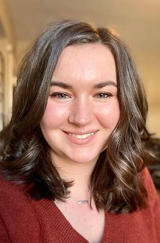

The Ohio State University PhD candidate Jenna Kline (ICICLE & Imageomics) earned an Alumni Grants for Graduate Research and Scholarship (AGGRS) award, one of just two recipients this year from the College of Engineering.
The competitive dissertation improvement grant supports Kline’s research on edge AI and multimodal sensing—combining camera traps, bioacoustics, GPS tags, and drones—to monitor wildlife behavior and habitat change with minimal intrusion.
Kline’s work is central to Smart Wilds, an AI for Nature initiative developing “digital twins” of field sites so scientists can test ideas, benchmark methods, and translate findings into conservation decisions. By synchronizing what we see (images), hear (sound), and track (movement), her projects aim to turn scattered observations into a cohesive, actionable view of ecosystems.
Why it matters: Biodiversity is changing quickly and unevenly. Traditional monitoring can be costly, slow, and hard to scale. Kline’s dissertation explores on-device inference and FAIR, reproducible workflows, enabling field teams to gather higher-quality data, process it near the source, and move results into open pipelines for collaboration.
What’s next: The AGGRS award will help expand pilot deployments, integrate education and workforce training for students, and refine open resources so other research sites can adopt similar methods. The goal is practical: build tools ecologists actually use, and show how AI plus domain expertise can accelerate conservation outcomes.
Kline’s recognition underscores a broader Imageomics mission to make AI useful, trustworthy, and interoperable for biodiversity science, and signals how student-led innovation is advancing that work at the front lines.